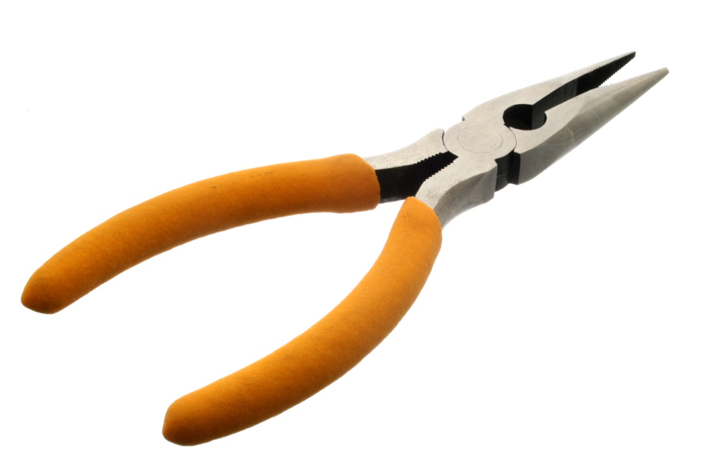
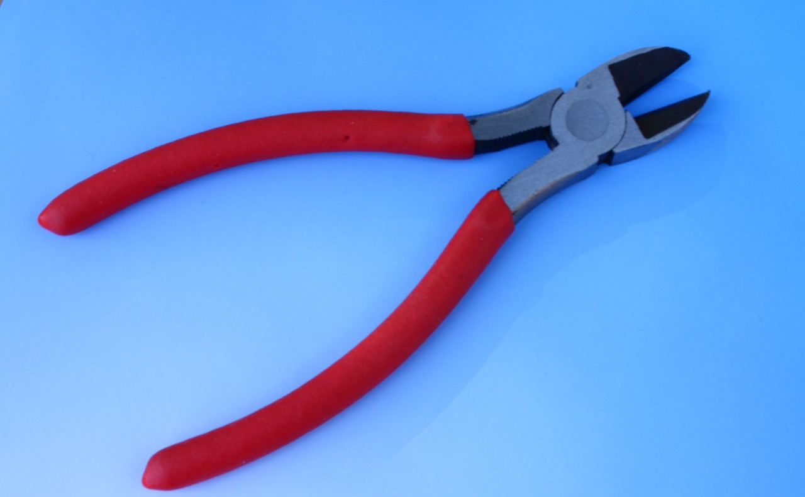
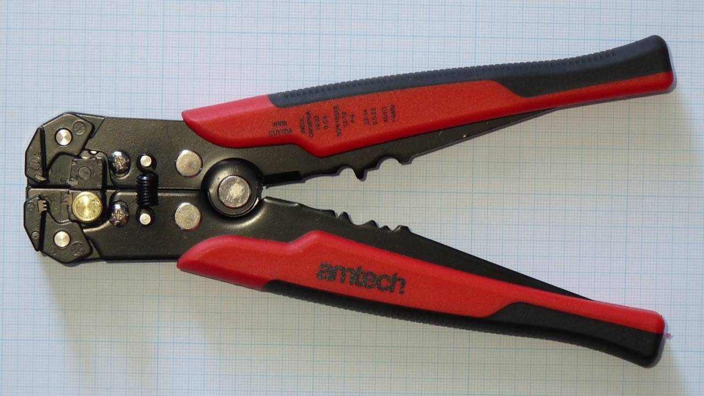
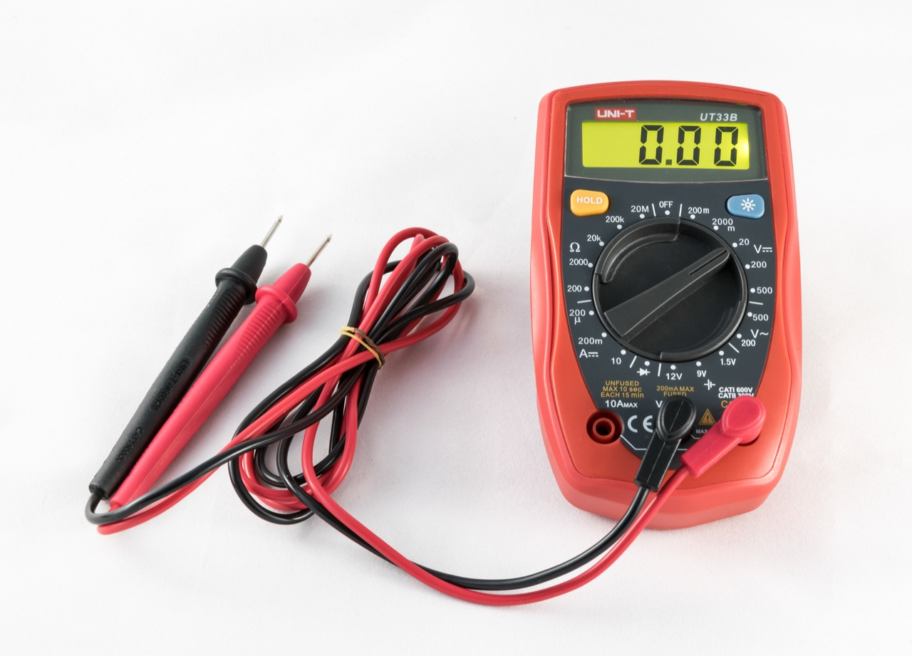
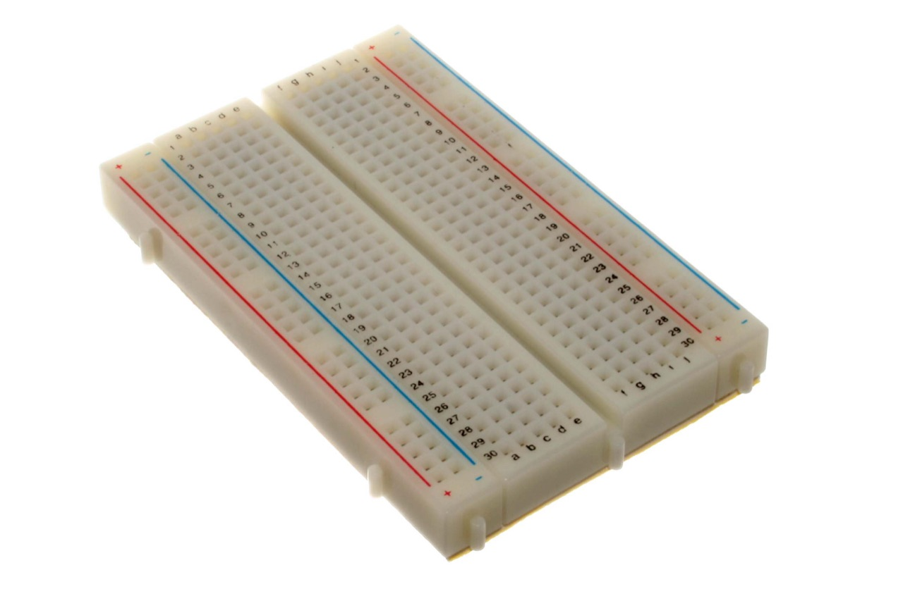

MODULE 4-2・常用工具介紹
常用工具與量測
工欲善其事,必先利其器。要完成一項電子製作,掌握正確的工具與使用方法,是成功的第一步。
常見手工具
🗜️
尖嘴鉗
夾持細小零件、彎折元件引腳。銲接時導線會導熱,善用尖嘴鉗夾持可避免燙傷。
✂️
斜口鉗
剪斷導線或零件接腳。刀口斜面設計可貼近電路板,方便銲接後修剪,成品更美觀。
🔧
剝線鉗
剝除電線的絕緣外皮,露出內部導體。使用時應依「線徑」選擇正確孔位,以免剪斷銅線。



⚠️ 銲接安全
使用電烙鐵與銲錫進行銲接時,務必戴護目鏡與防燙手套,保持通風避免吸入銲錫煙霧; 操作後務必將電烙鐵放回烙鐵架上,避免燙傷。確實執行安全操作,是負責任的製作者基本素養。
量測工具:三用電表
三用電表(簡稱 VOM,又稱萬用電表)是電子技術人員必備的基本儀表, 分為指針型與數位型兩類。它的主要功能是測量:交流／直流電壓(ACV／DCV)、 電阻值(Ω),以及直流電流(DCmA)。

🔍 量測原則:從大範圍逐步往小
- 若不知道待測物理量的大小,應先把檔位切到大範圍,再逐項往小範圍檢測。
- 這樣能避免量測值超過範圍而損壞電表。
- 測電壓用 V 檔、測電阻用 Ω 檔、測電流用 A 檔——選錯檔位可能燒毀電表。
🧪 動手操作:麵包板孔位連通探索
麵包板(Breadboard)實物
上下為電源軌、中央為元件區,中間溝槽把左右兩半隔開。下方互動就是模擬這塊板子的連通規則。
📷 oomlout・CC BY-SA 2.0・Wikimedia Commons
點一個孔,看看哪些孔跟它「相通」
麵包板不需銲接就能插上元件。但要會用它,得先搞懂「哪些孔在電路上是相通的」。 點擊任何一個孔,平台會把與它電氣相通的所有孔一起標亮。

💡 知識小百科
麵包板的連通規則
・中間區域:每一直行的 5 個孔「縱向相通」;左右兩半被中央溝槽隔開,互不相通。
・上下的電源軌:整條「橫向相通」,通常一條接正電源(紅)、一條接地(黑)。
搞懂連通規則,才能正確地把元件接成電路——這對理解電路與配線非常重要。
🧠 觀念檢核